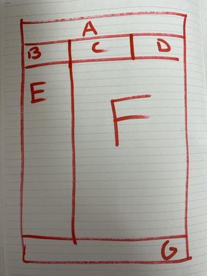

Hi Azu!
In this lesson we will learn how to position elements in a webpage using CSS.
Positioning is used to create header bars (the content that appears in many websites
in the upper part, which usually has logos, menus and headers), footer bars (like
header bars but at the bottom of the webpage, with terms and contitions notices, contact
information, etc.), sidebars (idem but at one side of the main content of a webpage,
either left, right, or both sides, and that usually contain menus).
CSS allows many alternative ways to position these elements, and we will learn one
called CSS grids.
There are several ways to use a CSS grid. One is as follows:
-
have a clear idea of how we want our webpage to look. Pen and paper is helpful, making
a grid diagram showing the design of the page, and what menus and images and headers are in which area.
Iterate design in the paper until you are happy with it. For example, look at this simple
diagram for a webpage with four rows: a header bar A, a subheader bar with three areas (a left one, B,
a center one C, and a right ine D), a sidebar E side by side with a main area F, and a footer bar G
.
-
use CSS to tell the browser that we want to use a grid design with the line
body {display:grid} inside the CSS file.
-
Decide which of the rows of the design will stretch to fill the entire browser window
if the information is not wnough to cover all available space. If, in this example, that
is the third row (the one with elements E and F, where we want to put the main content).
This is done by writing body {grid-template-rows: auto auto 1fr auto; } where the word auto means
that the corresponding row height will be automatically adjusted according to its content,
and the word 1fr means "fractional unit" and basically means to use all available space (so
it will stretch if needed).
-
this is optional: use CSS to tell the browser to use the full space of the window to paint
the elements, just in case there is not enough information to fll it. This is because many people
consider estethically pleasing to have something non-blank at the
bottom of the visible area of the browser (something like a footer bar or anything
like that). This tells the browser to stretch information as much as possible in order to try to
fill space until the bottom. This is done with the line height: 100vh;
-
use CSS to tell the browser the design that we created on paper. For example, for the
image displyed above, we would divide the whole webpage in a grid as detailed as needed:
body {
display: grid;
height: 100vh;
grid-template-rows: auto auto 1fr auto;
grid-template-areas: "A A A"
"B C D"
"E F F"
"G G G";
}
Observe how we write inside the CSS file several rows of letters, where each letter
corresponds to the name that we gave in the paper design (we can put any name
that we want instead of letters, but letters are convenient and short). In each line there
needs to be the same number of letters (in this case 3 per line, separated by spaces).
This number is the size of the longest row in our design: the first row has 1 element (the header A),
the second row has a length of 3 (the subheaders B, C, and D), the third row has a length of two (the
sidebar E and the main content F), and the fourth row has a length of one (the footer G). So the maximum
is 3, and that is the amount of letters in each row. Then, in each row we put each lines according
to the graphical design that we have in mind.
-
in the HTML, create a div element for each grid area; give that div a unique id, and enclose all
information that we want to be in a given area of the grid in that element. For example, if we want
to put a title related to Castilla and an image of its flag in the header A, we can write something
like
and then use the CSS to tell the browser that the element whose id is azuheader
goes into the part of the grid that we labeled A.
#azuheader {
grid-area: A;
}
and we do this for each and every group of elements in the webpage.
-
use CSS to create horzontal menus by taking away the vertical alignment, and the item marker,
and giving a different cursor and color of the font and/or backgrounf of an item when hovering
the mouse over it.
This means that we can write something like:
li {
display: inline-block;
}
li:hover {
color: blue;
background-color: yellow;
cursor: pointer;
}
-
for text elements, it is typical to control color, background color, font size, and centering.
This is done with text-align set to center, left, or right, and color, background-color
set to a given color.
-
for image elements, it is typical to control sizes, centering, and borders.
This is done with something like img {display: block; width: 50%; margin: auto; padding: 10%; border: 5px solid pink;}.
-
When webpages are seen in smartphones or in small screens, or in normal computers but where the browser
window in made very narrow, it is not nice if the website does not adapt to
the size of the screen somehow to make it easier for readers of those devices. To make reading easier, the
CSS command @media (max-width: 600px){ body {grid-template-areas: "A" "B" "C" "D" "E" "F" "G"}} can
be used to say that, for example, if the width of the screen is lower than 600 pixels (it is unclear
how big this number should be, you can play with
that number and then make the browser window thinner and wider to select an adequate value), then the grid
that you were working with is replaced by one where each element is written in a row.
EXERCISES
- Read the following HTML and CSS files (japan.css and japan.html), and try to understand the meaning of all elements.
japan.html
<!doctype html>
<html>
<head>
<title>Japan prefectures</title>
<link rel="stylesheet" href="japan.css">
<meta charset="utf-8">
<meta name="about" content="Japan">
<meta name="theme" content="geography">
<meta name="author" content="Perico de los Palotes and his friends">
</head>
<body>
<div id="mainheader">
<h1 id="maintitle">Japan and its geography</h1>
<img id="japanflag" src="japanflag.svg">
</div>
<div id="leftsubheader">
<ul>
<li><a href="https://en.wikipedia.org/wiki/hokkaido">Hokkaido</a></li>
<li><a href="https://en.wikipedia.org/wiki/honshu">Honshu</a></li>
<li><a href="https://en.wikipedia.org/wiki/shikoku">Shikoku</a></li>
<li><a href="https://en.wikipedia.org/wiki/kyushu">Kyushu</a></li>
</ul>
</div>
<div id="centersubheader">
<h2> Plenty of islands and cities!</h2>
</div>
<div id="rightsubheader">
<ul>
<li><a href="https://en.wikipedia.org/wiki/tokyo">Tokyo</a></li>
<li><a href="https://en.wikipedia.org/wiki/osaka">Osaka</a></li>
<li><a href="https://en.wikipedia.org/wiki/nagoya">Nagoya</a></li>
<li><a href="https://en.wikipedia.org/wiki/sendai">Sendai</a></li>
</ul>
</div>
<div id="sidebar">
<ol>
<li><a href="https://en.wikipedia.org/wiki/ramen">Ramen</a></li>
<li><a href="https://en.wikipedia.org/wiki/Soba">Soba</a></li>
<li><a href="https://en.wikipedia.org/wiki/Udon">udon</a></li>
<li><a href="https://en.wikipedia.org/wiki/sushi">Sushi</a></li>
</ol>
</div>
<div id="maincontent">
<p>Japan is big.</p>
<p>Japan has lots of islands. And rivers. And mountains.</p>
<img id="japanmap" src="japanmap.png">
<p>Japan has manga and anime.</p>
</div>
<div id="footer">
<ul>
<li><a href="https://en.wikipedia.org/wiki/universe">About us</a></li>
<li><a href="https://en.wikipedia.org/wiki/email">Contact information</a></li>
<li><a href="https://en.wikipedia.org/wiki/weather">Weather</a></li>
</ul>
</div>
</body>
</html>
japan.css
body {
display: grid;
grid-template-areas: "A A A"
"B C D"
"E F F"
"G G G";
height: 100vh;
grid-template-rows: auto auto 1fr auto;
text-align: center;
}
#mainheader {
grid-area: A;
text-align: center;
}
#leftsubheader {
grid-area: B;
background-color: green;
}
#centersubheader {
grid-area: C;
background-color: grey;
}
#rightsubheader {
grid-area: D;
background-color: red;
}
#sidebar {
grid-area: E;
background-color: pink;
}
#maincontent {
grid-area: F;
text-align: center;
}
#footer {
grid-area: G;
background-color: aquamarine;
}
ul {
list-style: none;
}
ul li {
display: inline-block;
}
li:hover {
color: blue;
background-color: yellow;
cursor: pointer;
}
#japanmap {
display: block;
margin: auto;
width: 50%;
}
#japanflag {
display: inline-block;
margin: auto;
width: 10%;
}
#maintitle {
color: blue;
}
@media (max-width: 600px) {
body {
grid-template-areas: "A"
"B"
"C"
"D"
"E"
"F"
"G";
}
}
- Write these files as japan.html and japan.css in a folder that you need to create for this
lesson. The file japan.html needs two imatges: a flag of Japan,
and a map of Japan. I found two that you can download from
https://upload.wikimedia.org/wikipedia/en/9/9e/Flag_of_Japan.svg
and
https://upload.wikimedia.org/wikipedia/commons/6/69/Japan_Map_CIA_2021.png
Download them and rename them to japanflag.svg and japanmnap.svg respectively.
- Load the file japan.html in the browser, and observe how each element is represented.
- Play with the CSS file elements, eliminating some lines and observing what happens,
changing colors, etc.
- Create a webpage that imitates the main design of the https://www.google.com webpage.
- Create a webpage that imitates the main design of Instagram.
- Create a webpage that imitates the main design of your favorite webpage.
- Repeat as many times as you can. Practice makes perfection. Have fun!!!!